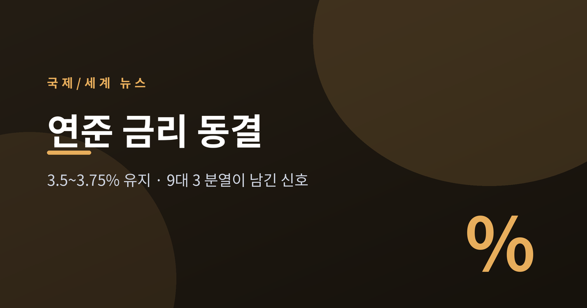
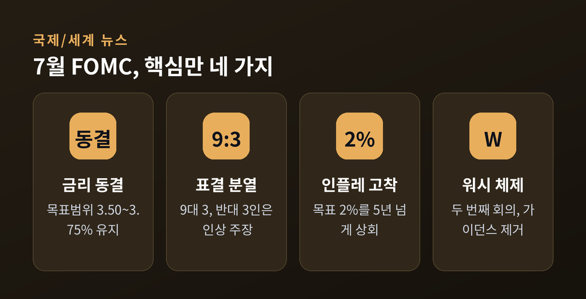
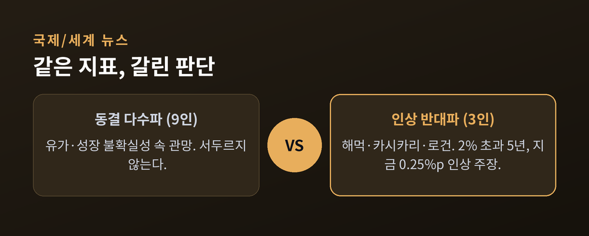
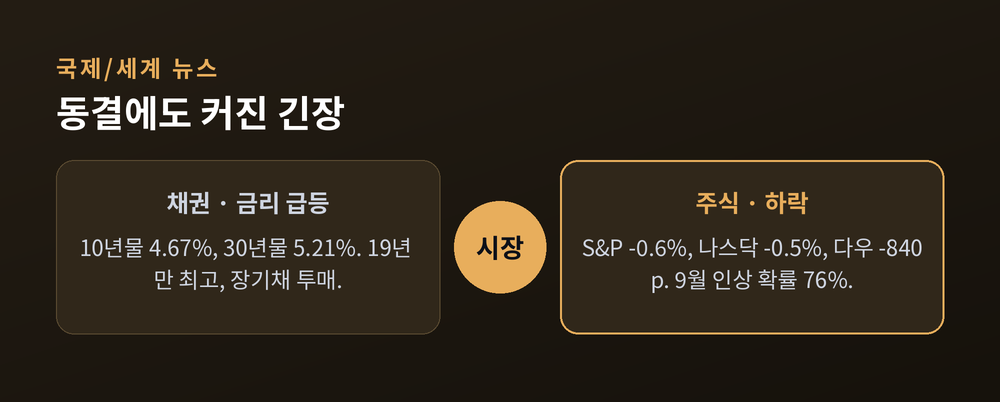
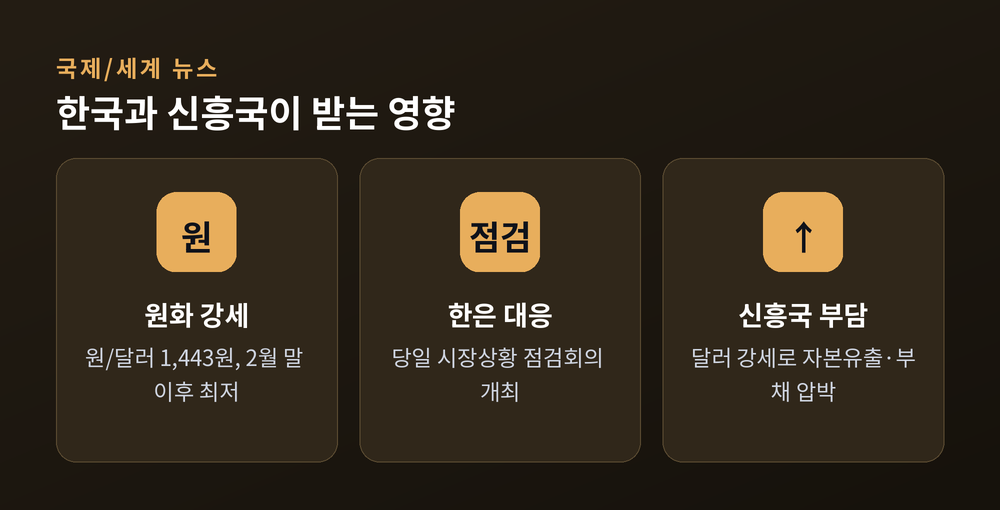

2026년 7월 30일
무슨 결정이고 왜 중요한가
이번 글에서는 미국 연준(Fed)의 2026년 7월 기준금리 동결 결정을 정리해 보겠습니다.
금리 자체보다 그 안에 담긴 '분열'과 '침묵'이 이번 국면의 핵심입니다.
민감한 사안인 만큼 어느 한쪽을 편들지 않고, 위원회의 서로 다른 목소리와 시장 반응을 함께 담았습니다.

2026년 7월 28~29일, 연준은 이틀간의 FOMC 정례회의를 열었습니다.
결론부터 말씀드리면, 기준금리 목표범위를 3.50~3.75%로 동결했습니다.
주목할 대목은 표결입니다. 동결은 9 대 3으로 가결됐습니다. 반대표 셋은 모두 지역 연은 총재였습니다.
베스 해먹 클리블랜드 총재, 닐 카시카리 미니애폴리스 총재, 로리 로건 댈러스 총재. 세 사람은 이번 회의에서 곧바로 0.25%포인트 인상을 원했습니다. 성명서에도 그 뜻이 그대로 적혔습니다.
이번이 케빈 워시 의장의 두 번째 주재 회의였습니다. 워시는 개회 발언에서 동결이 "이 불확실한 시기에 특히 신중한 선택"이라고 했습니다. 동시에 "연준에 물렁한 인플레이션 목표란 없다"며 2% 달성 의지를 분명히 했습니다.
목표범위 3.50~3.75%는 지난 여러 회의에 걸쳐 유지돼 온 수준입니다. 높지도 낮지도 않은 어중간한 자리에서, 연준은 또 한 번 멈춰 섰습니다. 연말 인플레이션 전망치는 오히려 올려 잡으며, 해가 가기 전 인상 가능성도 열어뒀습니다. 멈췄으되, 방향을 접은 것은 아니라는 신호입니다.

세 명이 '같은 방향'으로 반대한 점이 이례적입니다.
한 명이 동결에 반대하는 일은 종종 있습니다. 그러나 세 명이 나란히 "지금 올려야 한다"고 손든 것은 2016년 9월 이후 처음입니다. 근 10년 만에 가장 매파적인 표결이라는 평가가 나온 이유입니다.
이들의 논거는 하나로 모입니다. 인플레이션이 연준 목표치 2%를 5년 넘게 웃돌고 있다는 사실입니다. "목표를 이렇게 오래 못 지키는데 관망만 할 것인가." 반대파의 물음은 여기에 있습니다.
반대로 다수파는 서두르지 않았습니다. 중동發 유가 불안과 성장 둔화 우려가 겹친 상황에서, 한 발 지켜보자는 쪽이었습니다. 같은 지표를 놓고 판단이 갈린 셈입니다.
분열 그 자체가 하나의 메시지입니다. 위원회가 한목소리를 내지 못한다는 것은, 앞길이 그만큼 불투명하다는 뜻이기도 합니다. 세 표의 반대는 "다음 회의에서 인상이 살아 있다"는 신호로 읽혔습니다.

다수파가 서두르지 못한 데에는 이유가 있습니다.
가장 큰 변수는 중동입니다. 미국과 이란의 충돌이 다시 불붙으며, 국제 유가가 배럴당 100달러를 넘어섰습니다. 페르시아만을 빠져나오는 원유가 얼마나 될지, 아무도 자신 있게 말하지 못하는 상황입니다.
흐름은 짧은 사이에 뒤집혔습니다. 6월 한때는 물가가 눈에 띄게 꺾이며, 이란 전쟁이 끝나면 세계 경제가 숨을 돌릴 것이라는 기대가 있었습니다. 그러나 적대가 재개되자 그 전망은 다시 안갯속으로 들어갔습니다.
에너지 값이 오르면 문제가 복잡해집니다. 이미 끈적한 근원 물가 위에 유가가 얹히기 때문입니다. 그럴수록 "더 오래 묶어두자"는 쪽에 힘이 실립니다. 금리를 올리자니 성장이 걱정이고, 내리자니 물가가 발목을 잡는 국면인 셈입니다.
가장 큰 변화는 '말수'입니다.
예전 연준은 성명서에 향후 방향을 촘촘히 안내했습니다. 지금 워시의 연준은 그 선제 안내, 즉 포워드 가이던스를 걷어냈습니다. 7월 성명서는 약 130단어로, 종전 300단어대에서 절반 이하로 줄었습니다.
워시의 생각은 분명합니다. "연준은 예측하는 곳이 아니다." 시장이 다음 수를 미리 읽게 만들지 않겠다는 뜻입니다.
이 방식에는 양면이 있습니다. 불필요한 기대를 줄인다는 장점이 있습니다. 그러나 신호가 사라진 만큼 시장이 스스로 불확실성을 떠안아야 합니다. 아직 이 실험이 성공인지 단정하기는 이릅니다. 채권시장이 곧바로 의구심을 드러낸 점은, 이 실험의 첫 시험대가 이미 시작됐음을 보여줍니다.
채권시장이 먼저 움직였습니다.
10년물 국채금리는 7bp 올라 4.67%가 됐습니다. 30년물은 12bp 뛰어 5.21%까지 올랐습니다. 2007년 이후 19년 만의 최고 수준입니다.
투자자들은 장기채를 팔았습니다. "말은 강한데 정작 금리는 안 올렸다." 인플레이션이 수익을 갉아먹을 위험에 더 많은 보상을 요구한 것입니다.
주식도 눌렸습니다. 회견이 끝날 무렵 S&P500은 0.6%, 나스닥은 0.5% 내렸고, 다우지수는 840포인트가량 빠졌습니다. 선물시장은 9월 인상 가능성을 76%로 반영했습니다. 7월에 미룬 결정이 9월로 넘어갔다는 해석입니다.
흥미로운 대목은 반응의 방향입니다. 보통 동결은 시장이 반기는 소식입니다. 그런데 이번엔 강경한 발언과 세 표의 반대가 겹치며, 오히려 긴장이 커졌습니다. "금리는 그대로인데 분위기는 더 매파적"이라는 역설이 만들어진 것입니다. 블룸버그는 30년물이 19년 만에 최고로 뛴 이 장면을 두고, 워시 의장에게 보내는 신뢰의 경고라고 짚었습니다.

한국도 이 결정을 촉각을 세우고 지켜봤습니다.
한국은행은 결과 발표 당일 오전 '시장상황 점검회의'를 열었습니다. FOMC가 국내 금융·외환시장에 미칠 영향을 살피기 위해서입니다.
환율은 오히려 원화 강세 쪽으로 움직였습니다. 7월 하순 원/달러 환율은 달러당 1,443원 부근까지 내려, 2월 말 이후 가장 낮은 수준을 보였습니다. 국내 수급 개선과 긴축 기대가 배경으로 꼽힙니다.
다만 안심하기는 이릅니다. 미국의 금리가 높은 수준에서 오래 머물면 달러가 강해집니다. 미국이 홀로 긴축을 끌고 가는 '정책 발산'은 세계의 돈을 미국으로 빨아들입니다. 그 과정에서 달러 빚이 많은 신흥국은 자본 유출과 통화 약세라는 이중 부담을 집니다.
한국의 처지는 조금 낫습니다. 수출 개선과 국내 수급이 원화를 떠받치고 있기 때문입니다. 그러나 유가가 다시 뛰면 수입 물가가 오르고, 무역수지도 흔들릴 수 있습니다. 결국 관건은 9월 이후입니다. 추가 인상이 현실이 되면, 원화 강세를 떠받치던 버팀목도 다시 시험대에 오를 것입니다. 예전엔 '언제 내리나'가 관심이었다면, 지금은 '얼마나 더 버티나'가 초점입니다.

이 글의 시장 서술은 상황을 설명하기 위한 것이지, 특정 투자를 권하는 것이 아닙니다. 판단과 책임은 늘 투자자 본인의 몫입니다.
정리하면 이렇습니다. 연준은 금리를 묶었지만, 위원회는 갈라졌고 시장은 미덥지 않아 했습니다. 동결이라는 같은 결과를 두고도, 안도가 아니라 불안이 자라났습니다. 숫자는 그대로였으나, 그 안의 온도는 분명히 달라졌습니다.
"동결은 결정이지, 종착점이 아니다."
9월에 무엇이 올지 물으신다면, 아직은 답을 미뤄두는 편이 정직할 것입니다. 다만 이번 여름의 침묵이 가을의 한 수를 준비하는 시간이라는 것만은, 시장이 이미 눈치채고 있습니다.